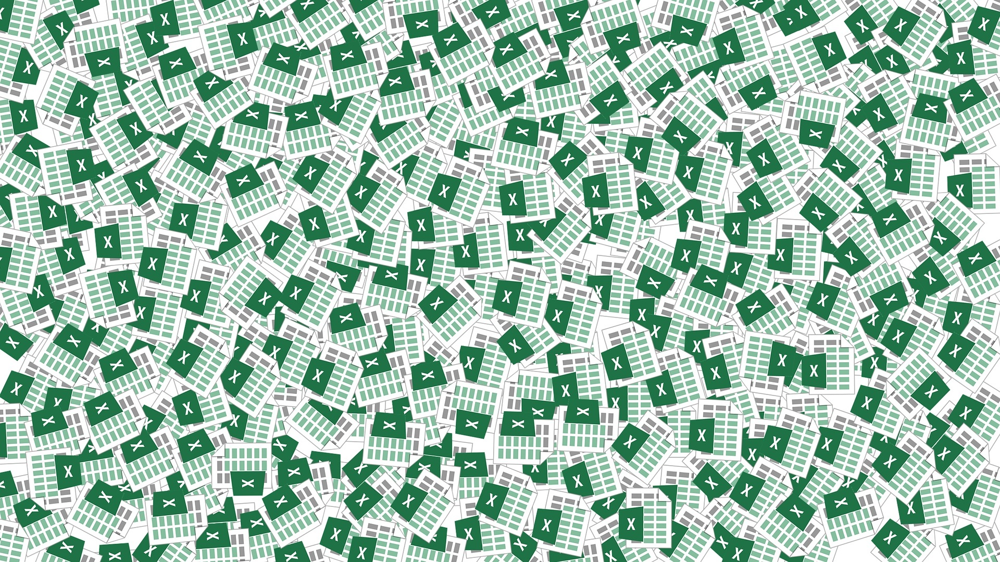

Microsoft Office
Excel
Formeln
Wir haben gelernt, wie man Formeln anwendet und wofür man sie alles brauchen kann. Es gibt auf Excel für fast alles, was man berechnen kann eine Formal. Man kann, auch wenn man eine Formel mehr mal braucht und die schon eingegeben hat, kann man sie, wen die Felder mit den Resultaten untereinander liegen herunterziehen und die Formel wird direkt übernommen, so kann man sich sehr viel Zeit sparen. Man kann zum Beispiel mit einer Formel ganz einfach einen Mittelwert herausfinden.
Was ist Excel und für was braucht mans
Excel hilft bei der Vereinfachung komplexer Berechnungen und Datenverwaltung in verschiedenen Bereichen, von Geschäftsanalysen bis hin zur persönlichen Finanzverwaltung.Mithilfe von Excel kann Mann Daten einfacher darstellen. Man kann auch Diagramme oder Grafiken erstellen, mithilfe von Excel.